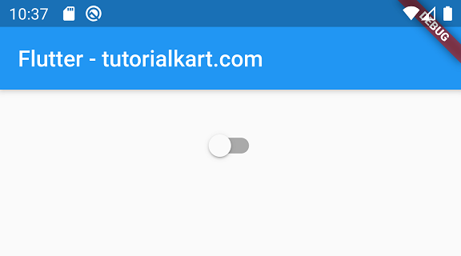
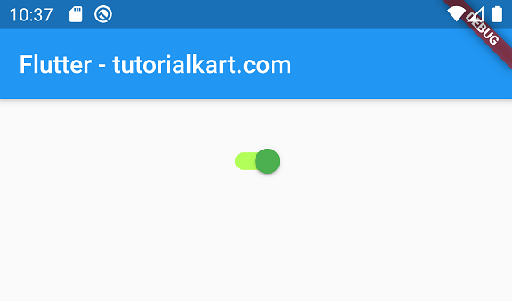

A material design switch. Used to toggle the on/off state of a single setting.
The switch itself does not maintain any state. Instead, when the state of the switch changes, the widget calls the onChanged callback. Most widgets that use a switch will listen for the onChanged callback and rebuild the switch with a new value to update the visual appearance of the switch.
If the onChanged callback is null, then the switch will be disabled (it will not respond to input). A disabled switch's thumb and track are rendered in shades of grey by default. The default appearance of a disabled switch can be overridden with inactiveThumbColor and inactiveTrackColor.
Requires one of its ancestors to be a Material widget.
The color to use when this switch is on.
The color to use on the track when this switch is on.
The color to use on the thumb when this switch is off.
The color to use on the track when this switch is off.
Called when the user toggles the switch on or off.
Whether this switch is on or off. If the value is true, the switch will be on, and if false, the switch will be off.
import 'package:flutter/material.dart';
void main() {
runApp(MaterialApp(
home: MyApp(),
));
}
class MyApp extends StatefulWidget {
@override
_State createState() => _State();
}
class _State extends State<MyApp> {
bool isSwitched = false;
@override
Widget build(BuildContext context) {
return Scaffold(
appBar: AppBar(
title: Text('Flutter - tutorialkart.com'),
),
body: Center(
child: Switch(
value: isSwitched,
onChanged: (value) {
setState(() {
isSwitched = value;
print(isSwitched);
});
},
activeTrackColor: Colors.lightGreenAccent,
activeColor: Colors.green,
),
)
);
}
}
The above will produce the following output:
When you turn on the switch it will look like following:
